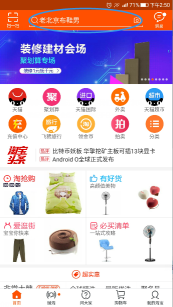
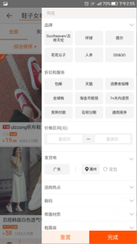
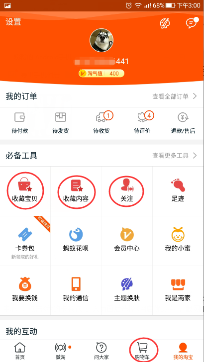
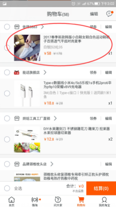
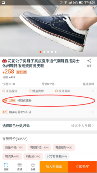
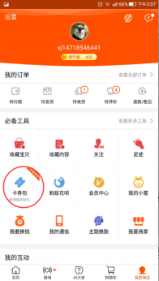
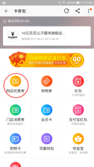
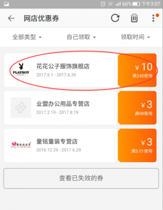
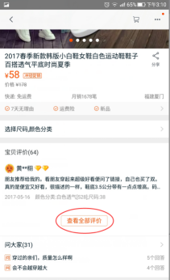

任务管理
做任务类问题
任务详细流程
1.如何找到商品
答：打开手机淘宝APP，在页面顶部搜索任务提供的关键词。

2.如何筛选
答：根据任务提示，搜索关键词后在打开的页面中点击<筛选>，在下拉选项中根据任务提示，进行筛选。

3.如何收藏宝贝.收藏店铺.加购物车
答：找到和任务相符合的商品，打开详情页后，浏览商品两分钟，并收藏商品或店铺、加购物车，然后回到首页，收藏物品点击我的淘宝，点击进入收藏的宝贝/店铺截图即可，加购物品在首页下方点击购物车进入截图即可。


4.如何领取优惠劵
答：根据提示找到商品后，进入店铺，在首页中点击任意G额的优惠券领取，再返回 <个人中心>，点击<我的卡卷包>进入页面后选择<网店优惠券>，截图即可。




5.如何进入评价页
答：打开商品详情页，页面向下拉一点，点击页面中<评价>，进入商品评价页，浏览到评价中部截图即可。

任务截图教程详解
4.然后打开淘宝APP根据任务提示截图。
一．浏览商品两分钟
这个任务有两张图，一张为关键字截图，另一张为浏览至商品底部截图